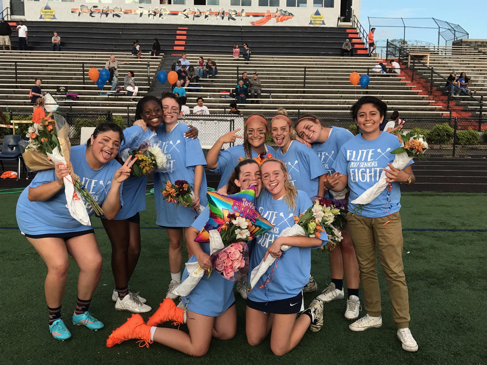
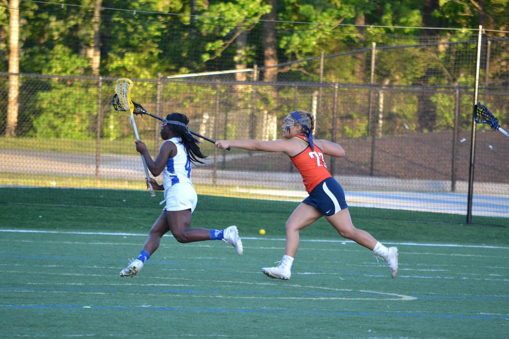
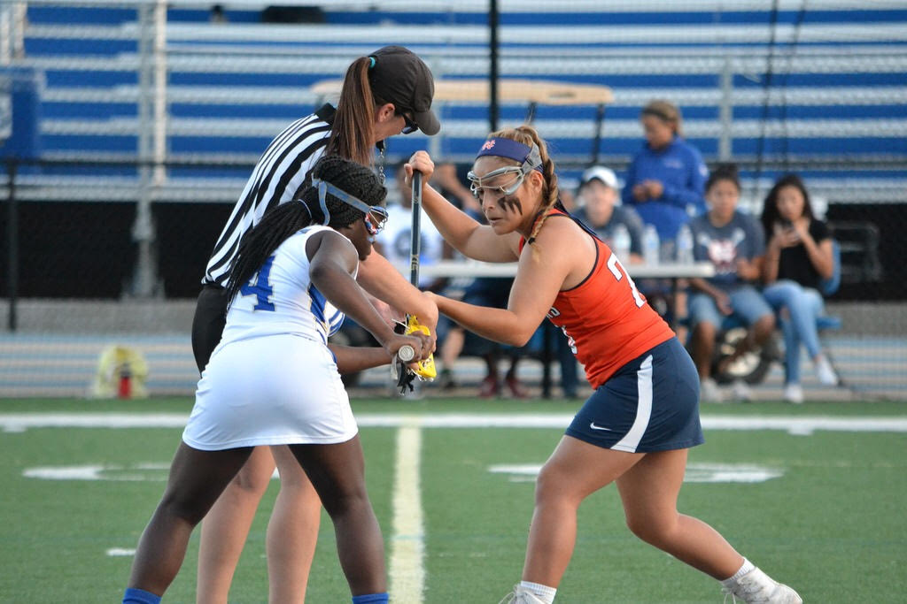
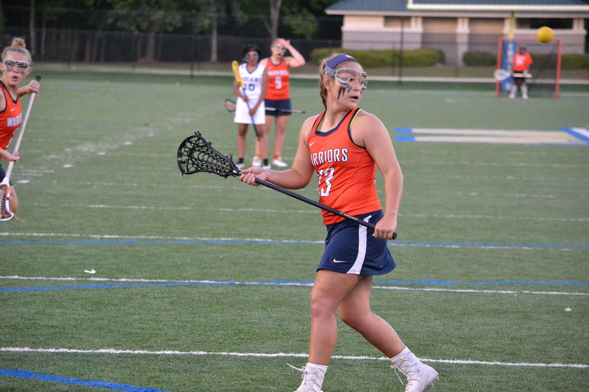
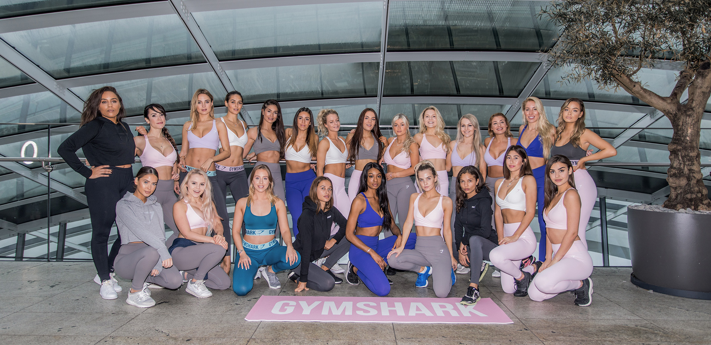

My Name is Karla Abundis. I am nineteen years old and I'm from Kennesaw Georgia.
I enjoy anything and everything that deals with fitness and sports! I grew up playing softball
ever since I was nine years old. Once I was sixteen I began playing Lacrosse. Now I spend most of my time in the
gym performing many hard fitness tasks and lifting heavy weights
hshhadjhkdshjhdskjhhsjakjsdhjshdhdkjhsdjhjshdahjkdhsdhjsdhjsdajhjdashjasdhjsjhsjdahjdashjdhjsdajkdasjkdsjkashdkjjkad sajdjashdshdahdahshdajshdhwuiihdkjhshsdhkjsahdkashdsk
This is my first year at UGA and I am majoring in International Business with a co-major in Real Estate. so far, my classes are not too difficult. They consist of core classes and the following table shows my week, at a glace.
| Time | Monday | Tuesday | Wednesday | Thursday | Friday | Saturday | Sunday |
|---|---|---|---|---|---|---|---|
| 9:00 | Sleep | PSYC 1101 | Sleep | PSYC 1101 | Sleep | Train | Train |
| 10:00 | FYOS | Break | Break | ||||
| 11:00 | SPAN 3011 | SPAN 3011 | SPAN 3011 | ||||
| 12:00 | CSCI LAB | ASTR 1020 | CSCI LAB | ASTR 1020 | Work | ||
| 1:00 | CSCI 1100 | CSCI 1100 | |||||
| 2:00 | WMST 1110 | WMST 1110 |
As you might have noticed, I am currently employed. I work at The Publix Shopping Center on Atlanta Highway. I am a part time deli clerk there! So if you ever need any deli meats sliced, you know where to go! I usually work Tuesdays, Thursdays and Fridays straight after school. I do everything from slicing hams and boxing fried chicken to making subs. I usually tend to work the closing shifts which requires alot of patience.
George W. Jenkins, the late founder of Publix Super Markets Inc., was born Sept. 29, 1907. Growing up in Harris, GA, he worked in his father's general store. In 1925, he headed to Tampa, FL at the age of 17 with hopes of making his fortune in the Florida real estate boom. Instead, he took a job as a stock clerk in a Piggly Wiggly grocery store. After only a couple of months, he was promoted to manager and was later transferred to manage the chain's largest store in Winter Haven, a position he held from 1926 to 1930. It was that year that he resigned from Piggly Wiggly to start his own grocery store
As you can also see, I spend majority of my time on the weekends training. Training at the gym that is. My training sessions consist of 3 different types of workouts. They include: Upperbody, LowerBody, and Cardio. It is simple to achieve a healthy lifestyle, I believe it is all mind over matter. Below is a list of a few tips that helped me change my life for the better.
Gymshark is a fitness apparel & accessories brand, manufacturer and online retailer based in the United Kingdom, supported by over 3 million highly engaged social media followers and customers in 131 countries.
Created in 2012 by teenager Ben Francis and a group of his high-school friends. Gymshark has grown from a screen printing operation in a garage, into one of the fastest growing and most recognisable brands in fitness. This growth comes from a devotion to producing innovative, effective performance wear and an ever-expanding social presence, and above all a commitment to the Gymshark vision: Before there is an action, there is an idea.
They exist to create the tools that help people unlock their full, incredible potential and put their ideas into action. Be all that you imagined you could be. Be a visionary
